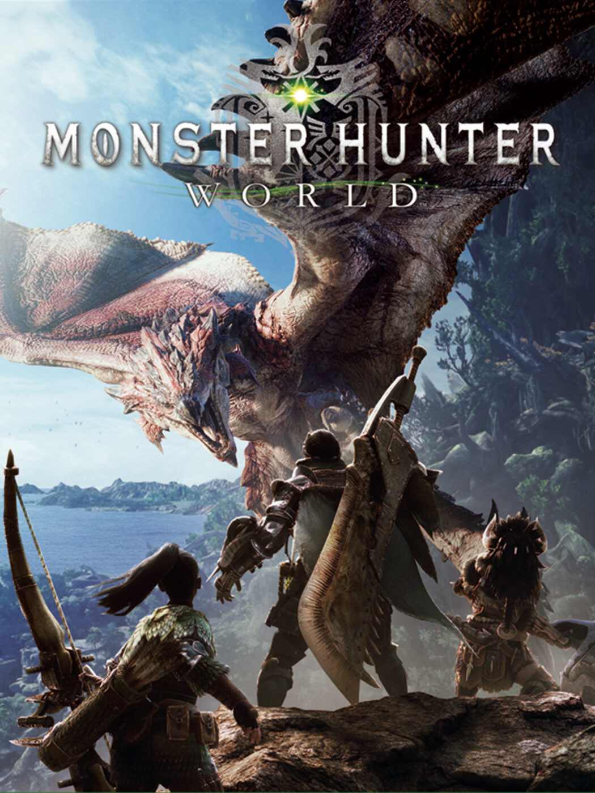
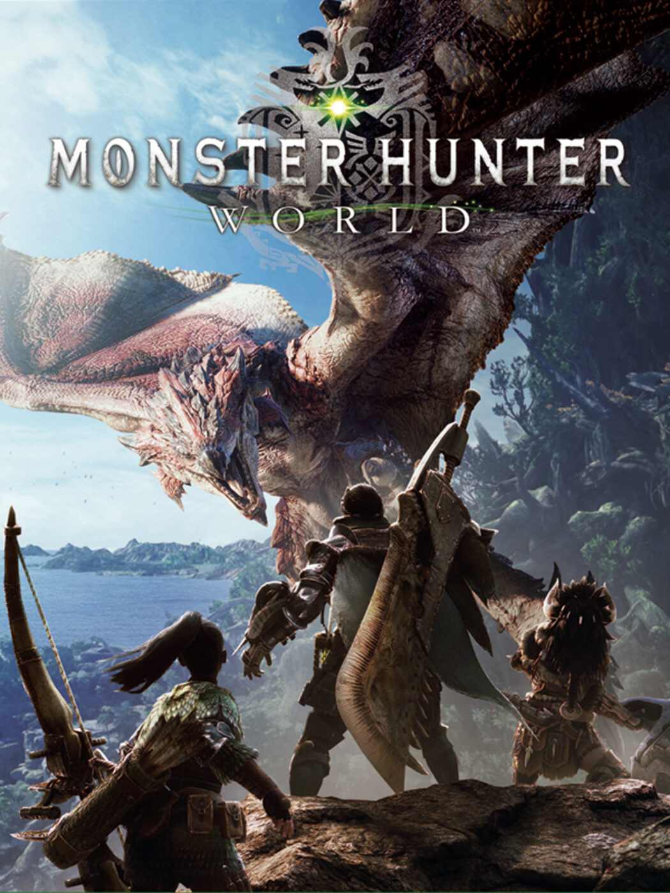

Noticias
{{n.titulo}}
{{n.titular}}
Foros
Los juegos en formato fisico desapareceran?
Por lukskywoker13
[Hilo-ofcial] Es importante los graficos en un videjuego?
Por tedd
Viciado de mas de 40 años
Por ronniecolemman
Reseñas de Juegos
Elden ring: dlc Shadow of the erdtree
From software
Pc, Xbox series x|s y Playstaion 5
Cyberpunk 2077
CD Poyect Red
Pc, Xbox series x|s y Playstaion 5

Red dead redemption 2
Rockstar
Pc, Xbox series x|s y Ps4|Ps5